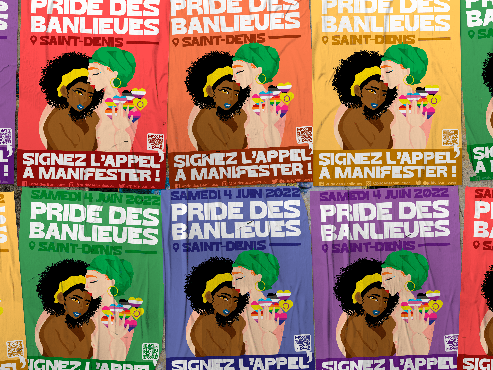
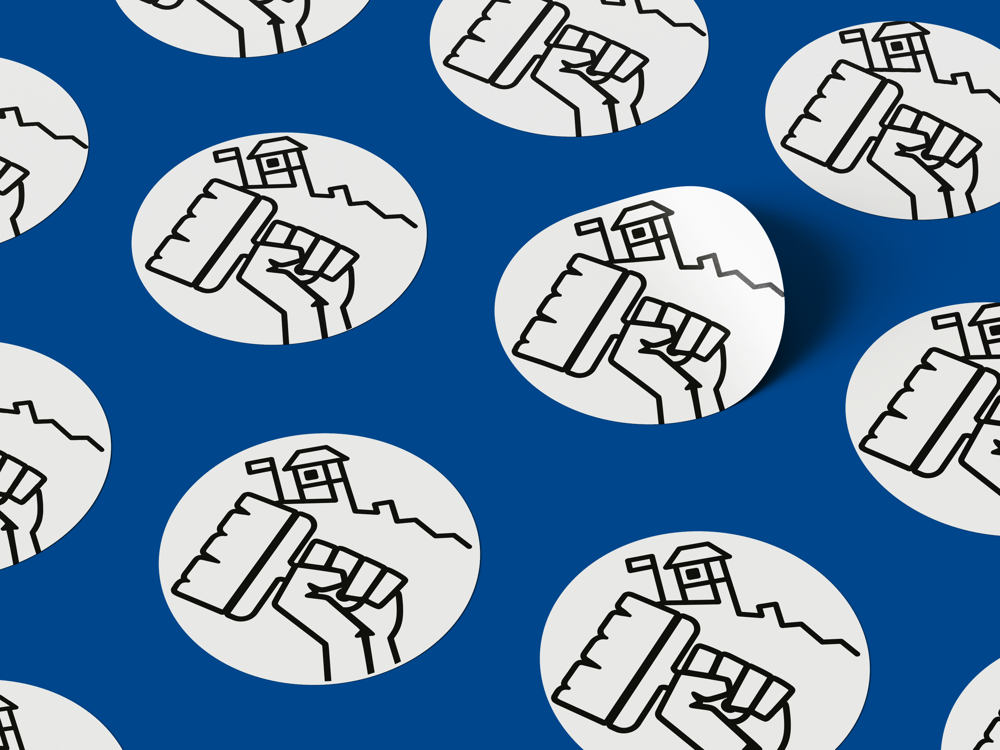
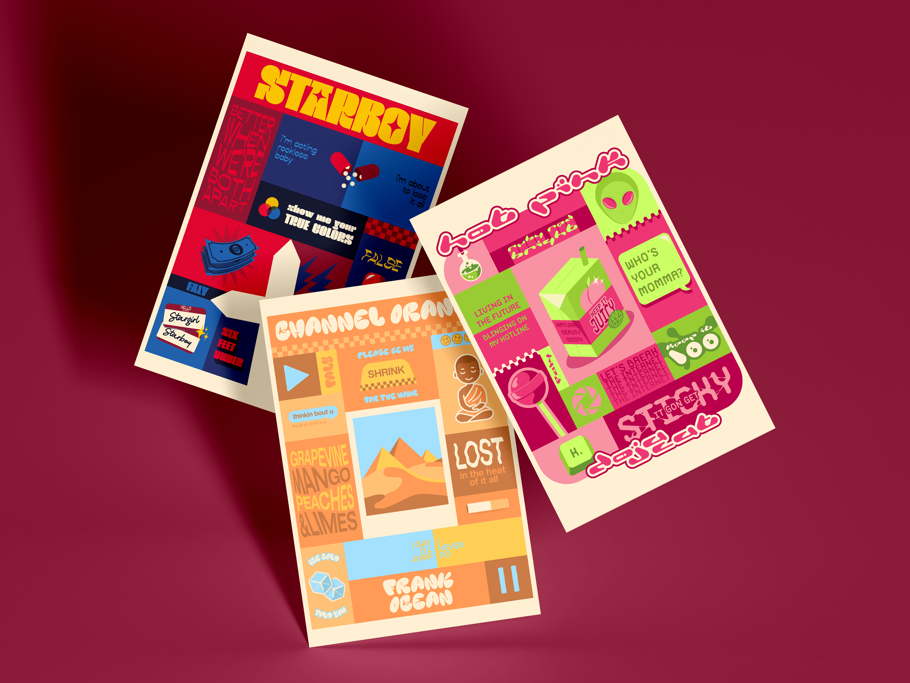
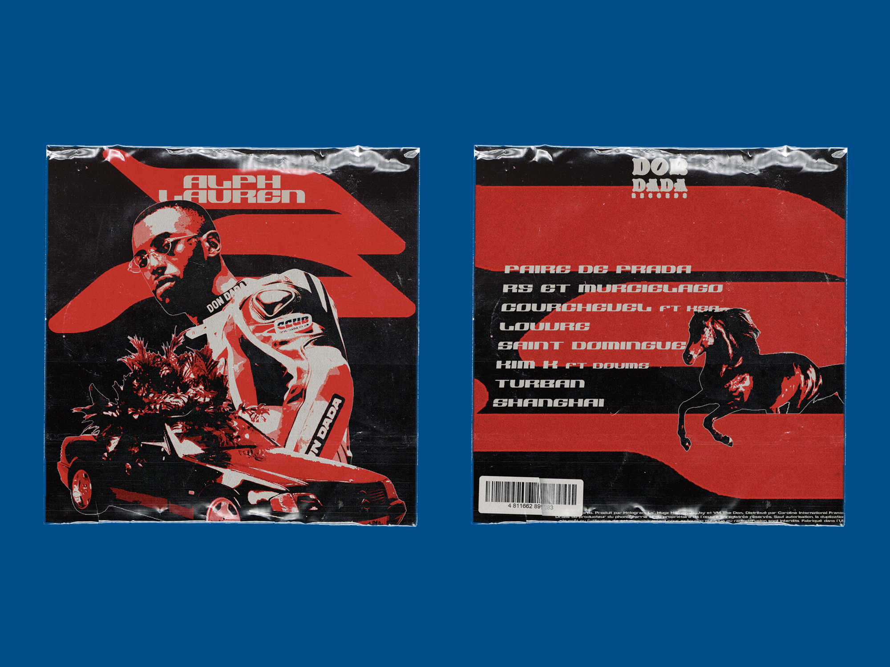

Posters pour la Pride des Banlieues
J'ai créé ce poster à partir d'une illustration sur papier pour annoncer la Pride des Banlieues, organisée par l'association du même nom. Il se décline en six couleurs correspondant aux six couleurs du drapeau de la Pride.

Logo pour Collages Féministes de Besançon
J'ai créé ce logo pour le compte Instagram @collages_feministes_besancon. Ce logo réunit ce qui définit leurs actions: le poing de la lutte, le pinceau du collage et la citadelle de Besançon. Il sert actuellement de photo de profil.

Posters illustratifs
Je crée des posters illustratifs inspirés d'albums musicaux, de leur pochette et de leur ambiance, sur commande ou de ma propre initiative.

Pochettes d'albums
Je crée des pochettes d'albums alternatives pour des artistes que j'apprécie, en m'inspirant de leur univers. Ici par exemple, j'ai imaginé une autre version de l'EP Alph Lauren 3 du rappeur Alpha Wann.
